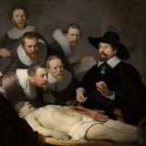
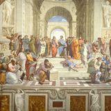
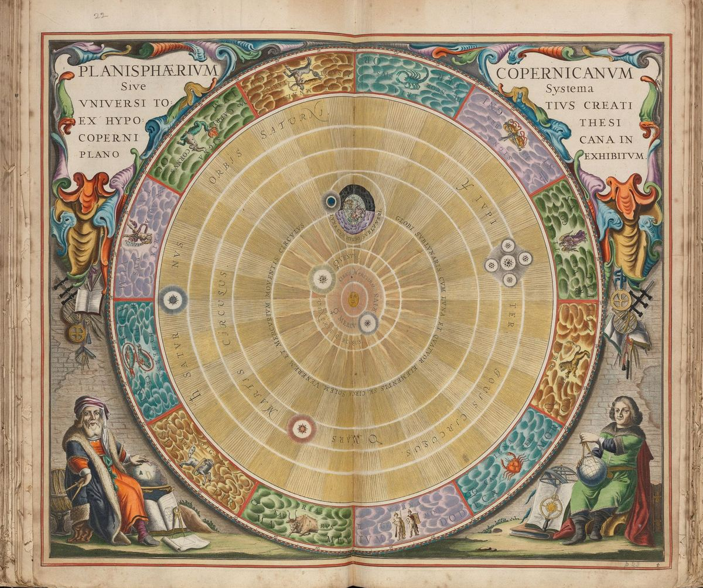

Cover to cover
all sixteen chapters in order, about 9 hours of reading
- 1
- 2

3- 4
- 5
- 6
- 7
- 8
- 9
- 10
- 11

12- 13
- 14
- 15
- 16

The whole guide on one chart: its sixteen chapters in five parts, all 202 sections, and the 564 cross-references that tie them together. Turn the wheel to a chapter to see what it covers, follow a section to where it leads, or take one of the guide’s learning paths.
Andreas Cellarius, Planisphaerium Copernicanum, from Harmonia Macrocosmica, 1660. Cellarius's atlas of the heavens set rival models of the cosmos side by side. The concept map does the same for rival theories of knowledge.
Click a chapter to turn the wheel to it, then a section to follow its links. The arrow keys step through the sections; drag to move, Ctrl + scroll to zoom.
The guide can be read from start to finish, but its contents page also suggests shorter routes for particular goals. Show one on the map to see which chapters it visits, and in what order.
all sixteen chapters in order, about 9 hours of reading

3
12about 10 hours